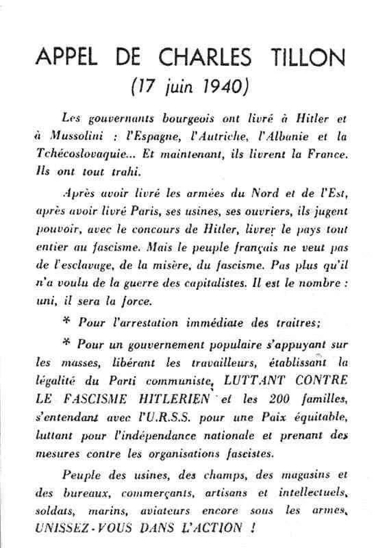

Réponse sur X
Charles Tillon. Un document présenté comme son appel du 17 juin 1940
Date de publication sur X · 26 mars 2026
Repères éditoriaux
Le document joint reproduit le texte attribué à Charles Tillon. La date et la diffusion de ce texte font partie des points à documenter dans son histoire.
Texte de la publication sur X
@AlleinThom42521 Tu sais ce qui se passe le 17 juin 1940 ? Pendant que Pétain demande l’armistice, Charles Tillon, communiste, lance le premier appel à résister.
Faut un certain culot pour venir parler de sabotage à des gens qui appelaient à combattre le fascisme. https://t.co/j3YUe4sH7D

Sources
PCF 79 · @79Parti sur X · AR-0005-TW-2037287499186290718
À lire aussi · À Châteaubriant, l’hommage du 22 octobre aux fusillés · Le lien d’origine